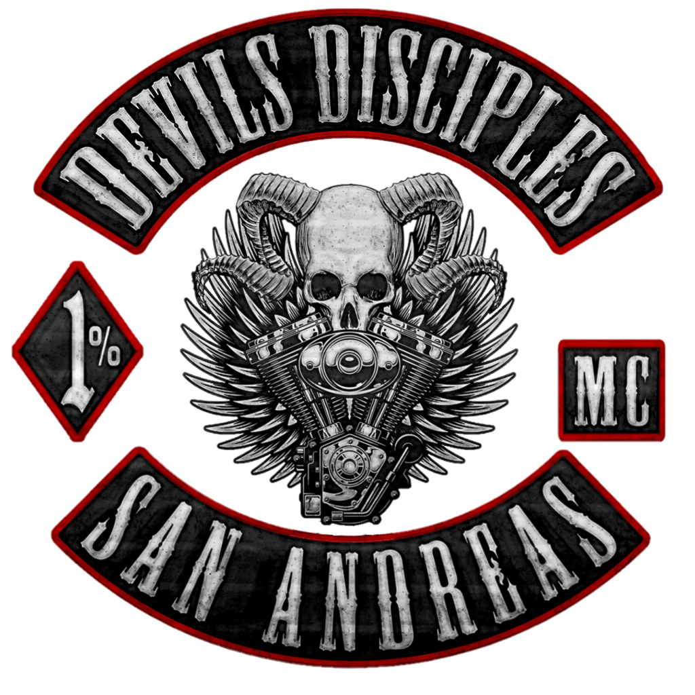
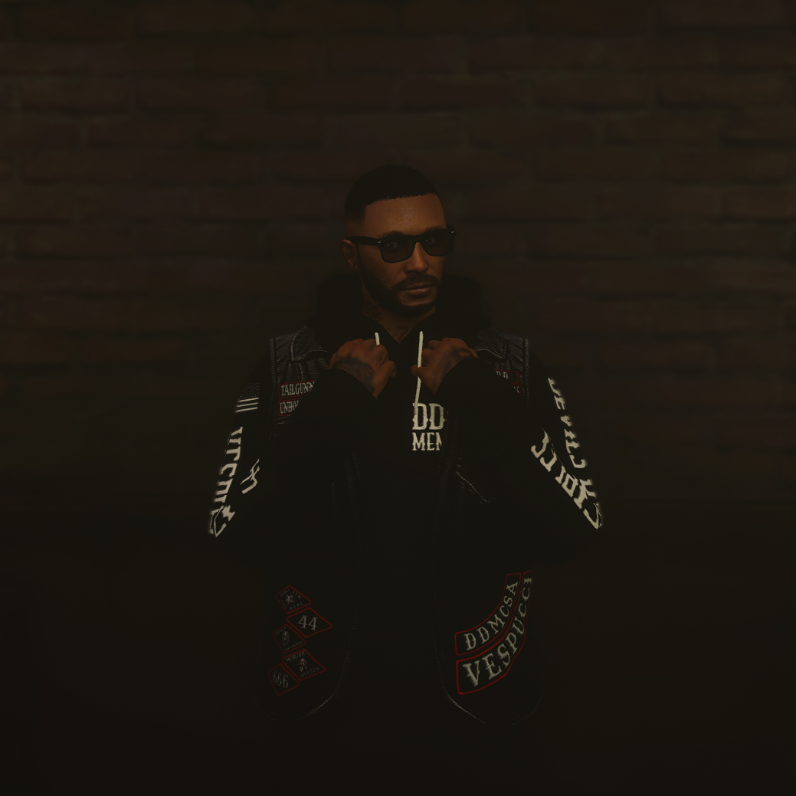

Members Of the Club
Cabinet Members
President

Kevin "Mayhem" Hudson
Club Role: The President acts as a personal representative of the club and is able to judge items that are not in the chapter's rules. They are a liaison between other motorcycle clubs, public relations and law enforcement. They represent the club in any business contracts and promote the club life among members and family members.
About: Kevin Hudson was a street kid who grew into the 1%er life from a young age. With his father being the founder of the Devils Disciples Motorcycle club, Kevin's childhood consisted of nearly every aspect of the life, and being subjected to those things made him who he is today. After a harsh RICO case that came down on Vince Hudson and the rest of DDMC, Kevin made up his mind.. knowing that he wanted to follow in his father's footsteps when he came of age and revitalize the club his father built. He's been President of the Devils Disciples San Andreas Charter for roughly 4 years now along with helping set up 3 more charters in Vice City, Liberty City and Arizona.
Vice President
Nathan Rowe
Club Role: The Vice-President supervises plans for club events and coordinates the committees. They also relay information between the President and the Members of the chapter. Any questions, comments or concerns of other committee members are brought to the Vice-President's attention
About: Nathan is a long time member of DDMC and is the Vice President of the club.
Seargeant At Arms
Klein
Club Role: In the MC subculture, the Sergeant-at-Arms is responsible for ensuring that the Bylaws and standing rules of a club are not violated, and that orders of the chapter officers are executed in an expeditious manner. They are responsible for policing and keeping order at all meetings and club events.
About: Klein is a long time member of DDMC and is the Sergeant-at-Arms for the club.
Road Captain
Kayce Bradford
Club Role: The Road Captain is responsible for all club runs/rides. They shall research, plan, and organize all runs. During actual time on the road or at intermediate stops during a run, they shall act as the ranking club officer, deferring only to the President or Vice President. The Road Captain has overall authority on a club ride.
About: A year ago, his brother was the victim of a drunk driving car incident which resulted in his death. The death effected the family in different ways, His father became more distance, his sister moved away but Kayce and her still stay in touch from time to time, however Kayce needed a change of pace so he decided to move out to San Andreas to start fresh. Kayce has arrives in San Andreas in search of his purpose in life, although he is just no realizing he will need a place to stay.Kayce met DDMC through Boomer. He had a run in with him a while back while serving a short time in prison.
Secretary
Dalton Briggs
Club Role: The Secretary is generally responsible for the administration of the club, arranging meetings (taking and circulating the minutes for these) and dealing with any administration regarding the club constitution. All correspondence will usually be handled by the Secretary
About: Dalton is a long time member of DDMC and is the Secretary for the club
Treasurer
Autumn Hudson
Club Role: The Treasurer keeps all the financial records of the club. They collect the income from all operations and are responsible for paying all the bills or expenses of the club, while keeping written records. The Treasurer reports the club’s status on payments owed and due at each committee meeting to the members. They may also provide the committee a written report of the financial status at the annual meetings. The Treasurer is also responsible for maintaining all the club patches that are un-issued as well as a record of the patches and colors that each member has in their possession. The Treasurer collects all dues and fines from the club’s members.
About: Autumn is a long time member of DDMC and is the Treasurer for the club, Autumn is also Kevin's Wife.
Chaplain
Louis “Hellhound” Harding
Club Role: A Chaplain is meant to oversee any spiritual needs of an MC. This rank is responsible for conducting any marriages or funerals. The chaplain will work together with the President to help decide whether a Prospect may receive their full back patch. The Chaplain will help protect any member when that member is going to jail.
About: Louis Harding was born in Los Santos, he left at a young age with his parents to East Coast and lived there for a few years, eventually he left and went and lived in Canada for a short time but then moved back to Los Santos. One day while living there trying to make ends meet, he met a man named Jake; a member of the Devils Disciples MC on Vespucci Beach. They spoke and Jake offered to introduce Lou to the club and they rode down to the clubhouse and was introduced to Autumn, Ash and Kevin then the rest is history.
Tailgunner
Luca Cider
Club Role: The executive duties of the Tail Gunner are, to ride at the back of the formation, secure lane for lane changes and enforce riding safety. If anyone crashes, or for another reason falls behind, the tail gunner will stop and assist them.
About: Luca Cider grew up with a hard life, raised by his mother in a world that often felt cold and unforgiving. His childhood was marked by struggle, but it taught him resilience and self-reliance. As an adult, Luca never stayed in one place for too long, always searching for something that felt right—an elusive sense of belonging that seemed just out of reach. He roamed from town to town, chasing opportunities, making money, and keeping his independence. Luca is a man who thrives on movement, never content to sit still for long. He’s prideful, loyal, and brutally honest, with a deep respect for those who earn his trust. His relentless pursuit of purpose led him to the Devil’s Disciples Motorcycle Club, where he found the family he had been looking for. With the club, Luca discovered not just a place to call home, but a brotherhood that shares his values of loyalty and honor. Now, Luca is dedicated to the club and its members—his brothers and sisters—willing to do whatever it takes to uphold the traditions and principles that make the Devil’s Disciples more than just a group, but a family. The bond he shares with the club is unbreakable, and Luca will stop at nothing to protect it.
Head Enforcer
Antonio Romano
Club Role: The Head Enforcer serves as the intermediary between the Sergeant at Arms and the other enforcers. They collaborate closely with both the Sergeant at Arms and the enforcers to ensure strict adherence to the club’s by-laws and standing rules by all members. The Head Enforcer is responsible for administering fines to enforcers if necessary. During times of conflict, the Head Enforcer acts as the Sergeant at Arms’ liaison, ensuring that all orders from the President are executed by the members. In the absence of the Sergeant at Arms, the Head Enforcer will assume their responsibilities to maintain order and discipline within the club if needed.
About: Tony is a long time member of DDMC and is the Head enforcer for the club.
Enforcers
Club Role: The Enforcer makes certain that the club laws and rules are followed by all members. They protect all the patch holders and protect the club’s reputation in any type of conflict. The Enforcer assists all members of the club in combat of any sort, including any type of weapons or fist fights.
Lincoln Stoner
About: Lincoln Stoner is an Enforcer for Devils Disciples. He wasnt always with DDMC. He came to Los Santos on an invitation from his friend Murph. Murph was the VP of Berserkers MC currently undergoing a hierarchy change. Lincoln being experienced in that world decided to help out. After some internal strife and club members not seeing eye to eye it was decided they split and go their own way. Lincoln would then look to a club more suited to his interests. While he was helping Murph he had become friends with Dalton and Lou of DDMC. They would occasionally chat about club life when they ran into each other. After the split it was no surprise Lincoln made his way to Vespucci to let them know what happened. Still being dedicated to club culture he decided to hangaround. After a few weeks Dalton brought his name up and sponsored him. During this time Lincoln would increasingly get more involved with DDMC. Going on jobs, moving product, being given tasks, anything to show he was there to stay. During his prospect phase Lincoln would defend the club from the Oblonskys, the former family of a hangaround. Lincoln would show that he was ready to kill and die for the club. Eventually as time went on he gained the respect of his fellow prospects and club members. He would be patched in as a Disciple. From there he would show his consistent effort in keeping the club turf safe and reputation in good standing. After some time in the club and blessing from both Tony and Klein he would make Enforcer. Lincoln can be found patrolling the beach or hanging around the Alibi, the bar Dalton owns. Lincolns first and only priority is to the safety of his club and he’ll do whatever it takes to keep it that way.
Levi Bridgewater
About: Levi grew up in springfield Tennesee with 2 brothers. Levi's dad liked riding motorcycles and introduced him to bikes. Levi fell in love with riding and when he was old enough he bought his own motorcycle. Levi moved to Los Santos to get away from family drama, Levi met Kevin and was one of the first prospects of DDMC. Levi became a patched member and then went nomad for a while. Levi returned to the club and was asked to be an enforcer by President Kevin Hudson, Levi has held the role since.
Ben "Snake" Eldridge
About: Ben grew up in the great white north eh? A simple creature usually found patrolling the beaches of Vespucci at night or hanging aboot reaking of the hobbit leaf in the wee hours of the dawn. Like any loyal mutt hes happy to see any and all club members and will defend them fiercily. To him DDMC comes first and only, anything and everything for the club!
Jax Jones
About: Jax Jones is an Enforcer for the Devil's Disciples. Jax grew up in liberty city and moved to Sandy Shores in His 20's Jax got introduced to the 1% MC culture when he became a member of a charter of the Lost MC. Jax climbed the ranks to Sergeant at Arms within the lost. Jax Eventually left the Lost due to a RICO case and the club shutting down. Jax rode around as a nomad for a while before introducing himself to the Devils Disciples. Jax became a prospect for the club in May of 2024 and became a full patched member in July of 2024. Jax gained reputation within the club by showing that he was willing to do anything for the club and showed that he was about the 1% lifestyle. In October of 2024 Jax became an enforcer for the club. Jax will do anything for his club.
Disciples
Club Role: A Disciple is also called a Patch or a Member. Members have earned their patch after graduating from a Prospect. They have the right to wear the club’s colors and attend club meetings, and are officially our brother or sister.
Alice Armstrong
About: Alice Armstrong (previously known as Alice Oblonsky) was originally the Matriarch of a Family that was moving into Los Santos. She was the first of her family to move into the city. She began making as much money as she could, making connections with people, and just doing what she could do prepare for her family. This was until she met DDMC. Alice had then made a change for the better, leaving behind her family's name and beginning to hang around the club. This made the Oblonskys quite upset with her. Leading to a smallish fight between DDMC and the Oblonskys where the Oblonskys got deported. She had fully turned her back fully on the family even before she got her prospect patch. Tony sponsored her an taught her all about the culture of DDMC. After proving herself multiple times over she finally became a full patch. A Disciple. This became her new family now. Alice can be found around Vesspucci beach and the clubhouse most days, on the days she can't be found she's either doing something for the club or spending time with her boyfriend Samuel Wolfpike. Alice owes everything to this club and will do anything for it. This is her Family.
Micah Axton
About: Micah Axton grew up in a broken home, inheriting both his father’s mechanical skills and his demons—addiction, anger, and a past he couldn’t outrun. By his mid-twenties, he'd worn out his welcome in his small town and left for Los Santos, hoping for a fresh start. The city offered freedom, but it was also dangerous, and soon Micah found himself entangled in the underworld, doing whatever it took to survive. It was then that he crossed paths with The Devils’ Disciples, a ruthless motorcycle club that saw potential in him. Micah proved himself, rising from an outsider to a full-fledged member, earning the respect of the club as time passed. Now, he’s a loyal disciple, a man who’s come to accept his past, and move forward with his brothers(and sisters) in the Disciples.
Burt "Cowboy" Murdoch
About: February 29th, 2024 Burt landed in city of Los Santos to start a new life. He was raised in in a small town of rural Texas by his Grandfather. Coming to the big city was a big change from his former lifestyle on the ranch. Not long after landing he met Luca Cider where they quickly became friends. One day Burt met Leyla Kblocc and he felt an instant connection, though not yet reciprocated, they grew very close. After a few dates Burt and Leyla made their relationship official . The pair had become inseparable and refused to go places if the other was not invited. One Evening Burt and Luca were on the Del Perro Pier where they ran into two members of DDMC; Dalton and Lou. The four of them talked for a short period of time, but it would not be the last time they all interacted. The conversation Burt had with the two members of DDMC stuck with him for a while before he went back to talk to them again and was introduced to more members of the club. Burt started hanging around with the club and eventually was sponsored by Kayce Bradford to become a prospect. After some major changes to himself and some hard work, Burt got his full patch and became a member of DDMC. The club had become his family, but he still had one important thing to do. A few months later Burt got the courage and asked Leyla to be his wife. Burt married the love of his life with his DDMC family by his side. Burt owes a lot to the club and they have helped shape him into who he is today. DFFD
Eli Hopper
About: Eli Hopper grew up in Coogee, Australia. He came to Los Santos in search of new opportunities and eventually ended up as a member of the Vagos. Eli eventually left the Vagos alongside his friends due to a lack of leadership, and shortly after he would meet the Devils Disciples and decide to be a hang around for the MC. In June of 2024 Eli became a prospect for the club. He primarily showed his worth by being a getaway driver on jobs, but he was completely new to the MC culture so he had a lot to learn in order to show he had what it took to become a member of the club. Later in July Eli got his patch and became a fully fledged member of the MC. Eli tends to goof around but also knows when its time to get serious when dealing with club business.
Al Silverman
About: Al is the newest member of DDMC He was recently patched in early october. Al moved to los santos after leaving the marines with some friends. After 2 years Al's friends left the city and Al decided to stay behind. Al ran into Autumn once and helped repair her truck. Al expressed interest with the club and started to hang around. Alice then brought Al in as a prospect and after 3 months of being a prospect Al was finally patched in.
Nomads
Club Role: A nomad is someone who has put in the work for the club but temporarily can’t dedicate the time or resources to the club but still wishes to be a part of the club, an LOA (Leave of Absence) of sorts. A Nomad does not pay club dues, can attend church, but can not officially vote on club matters. A nomad is also someone who scouts areas to start new chapters of DDMC. They are respected by the club as full members.
Cieran "Irish" MacGuire
About: Cieran is a long time member of DDMC, Cieran at one point held the position of SGT at Arms. Cieran has since stepped away from being an active patch member and is currently a nomad.